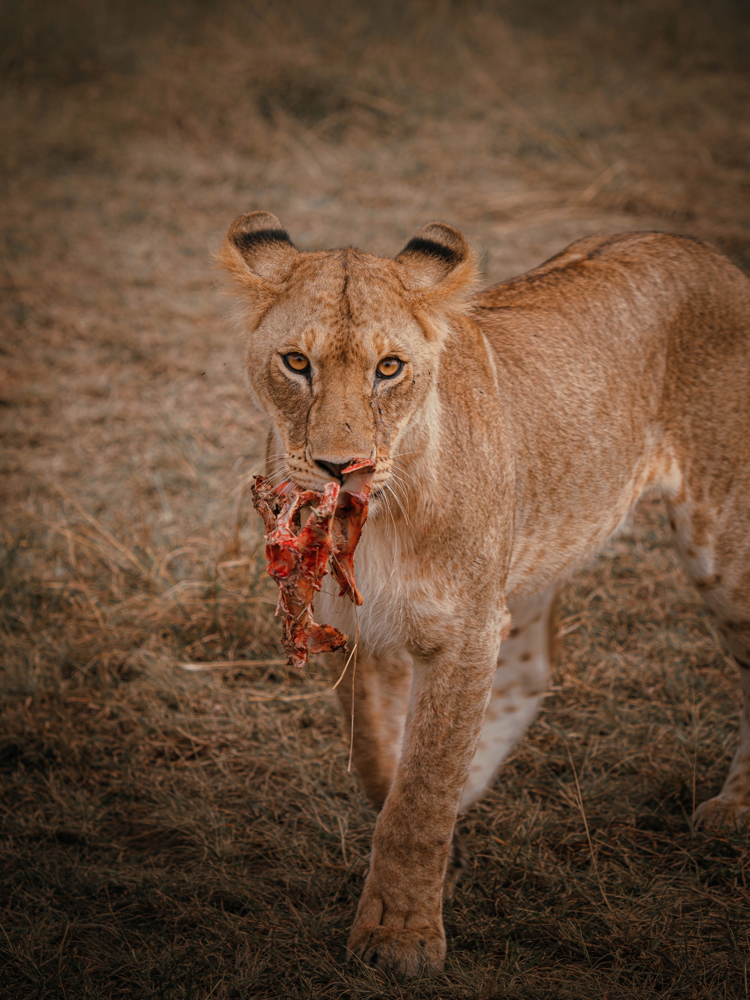
Kenya · East Africa
YOUR NEXT
WILD STORY.
Tailor-made Kenyan safaris, unforgettable encounters and journeys designed around you.
The invitation
KENYA IS WAITING.
Kenya isn't something you simply see.
It is the roar of a lion before sunrise, dust rising
behind a safari vehicle, elephants crossing the horizon
and endless golden plains beneath an African sky.
This is Africa. This is your story.
Explore the wild
WHERE WILL YOUR STORY TAKE YOU?
Discover Kenya through our curated collection of authentic safari experiences.
CLASSIC SAFARI ESCAPES
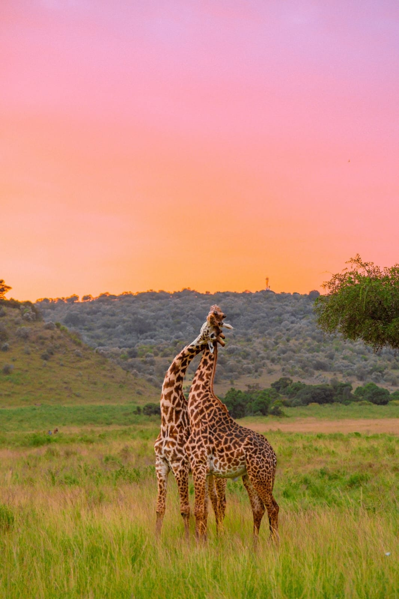
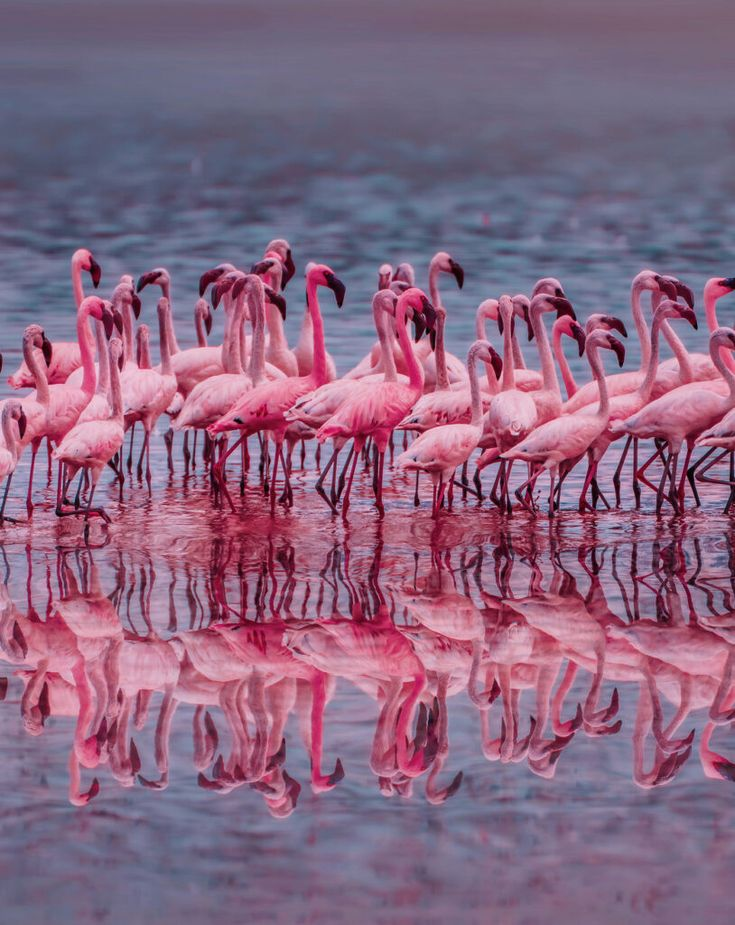
KENYA GRAND EXPEDITIONS
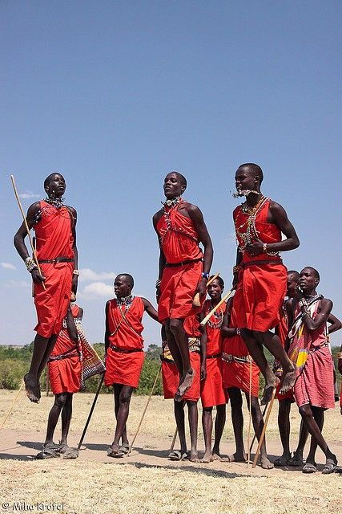
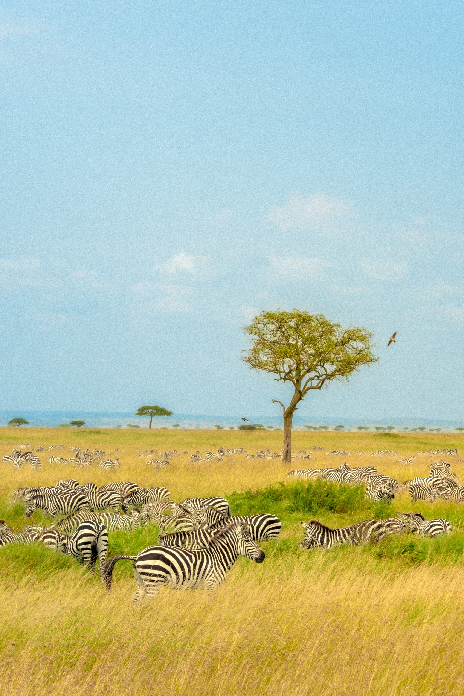
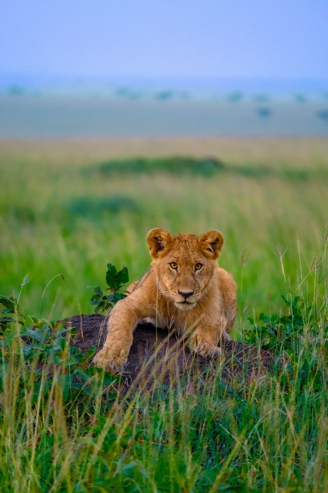
SAFARI & COAST
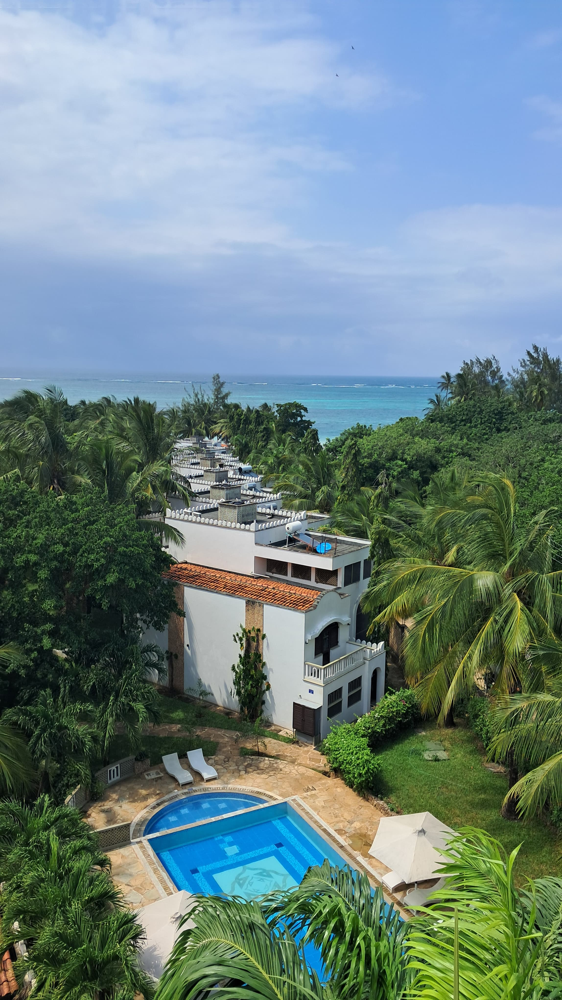
CULTURE & LOCAL EXPERIENCES
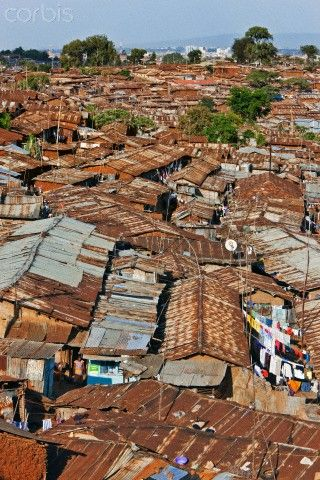
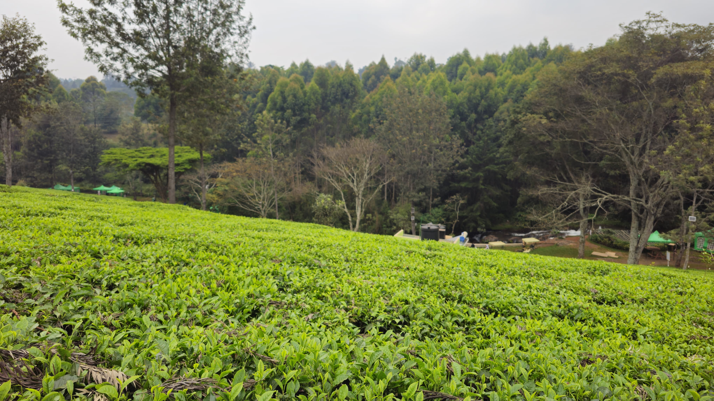
Made for you
YOUR SAFARI.
YOUR SAFARI.
YOUR WAY.
Don't see exactly what you're looking for? We'll build your journey around you.
Create My Safari →
The experience
SEE IT. FEEL IT. REMEMBER IT.
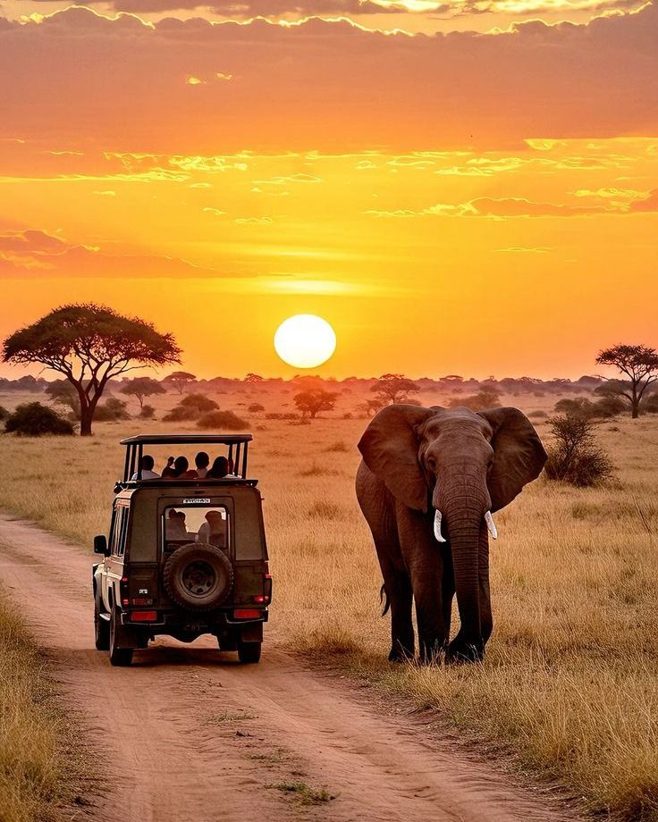
Game Drives
Enter the wild before sunrise and experience Kenya at its most alive.
Wildlife
Encounter Africa's iconic animals in their natural habitat.
Culture
Experience the people, traditions and stories that make Kenya unique.
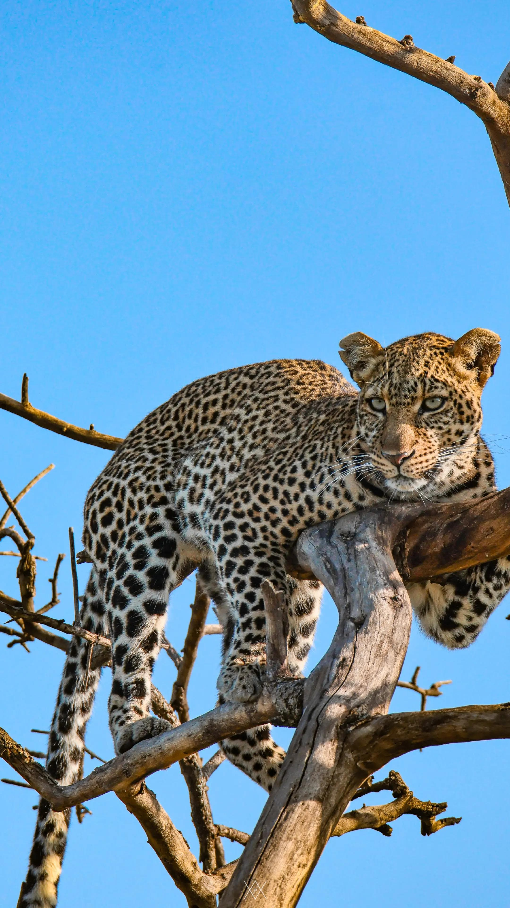
Photography
Chase incredible wildlife moments and unforgettable African light.
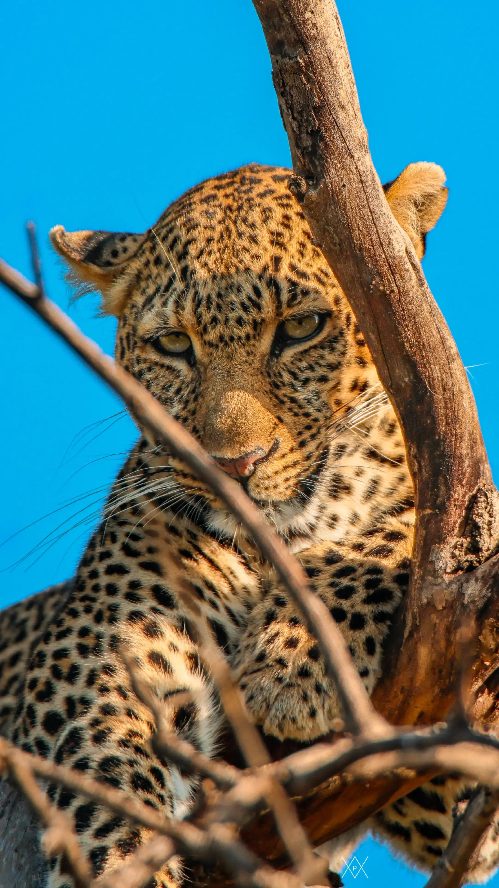
Adventure
Explore Kenya beyond the usual routes.
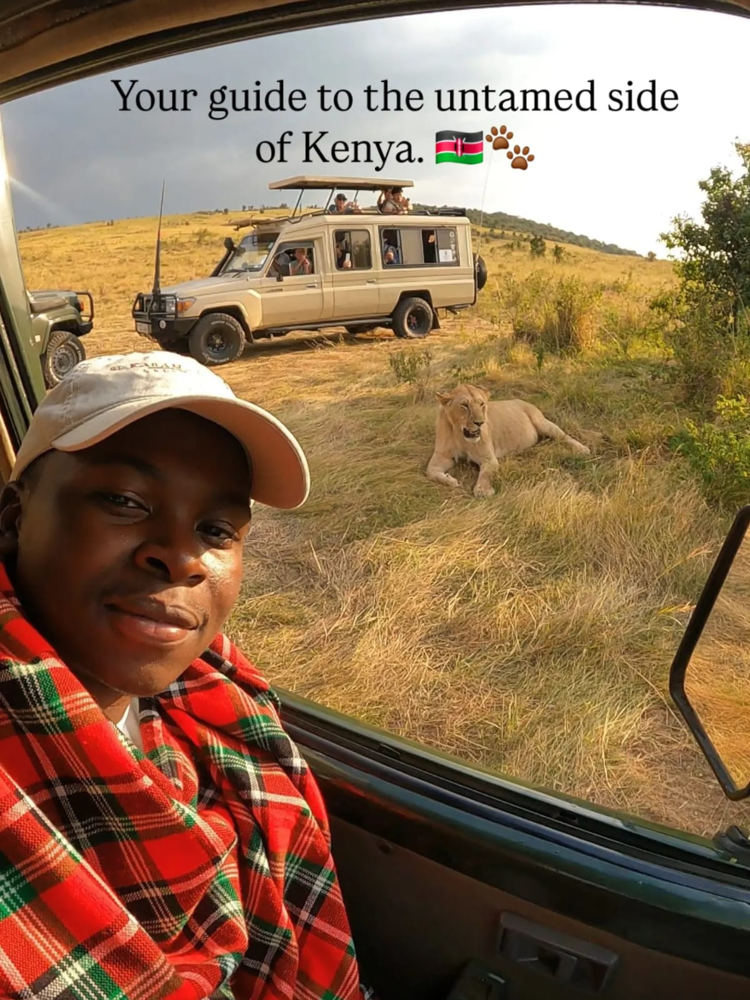
Your local connection
YOUR GUIDE.
YOUR GUIDE.
YOUR CONNECTION.
Kenya isn't just a destination to us. It's home. Discover the wild with local knowledge, personal service and a passion for unforgettable journeys.
Meet Your Guide
Follow the journey
FROM THE WILD.
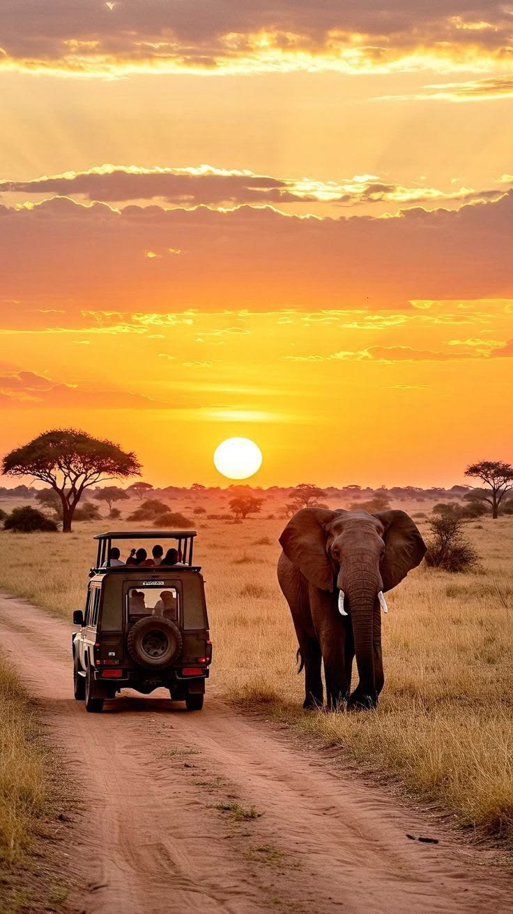
Traveller stories
DON'T TAKE OUR WORD FOR IT.
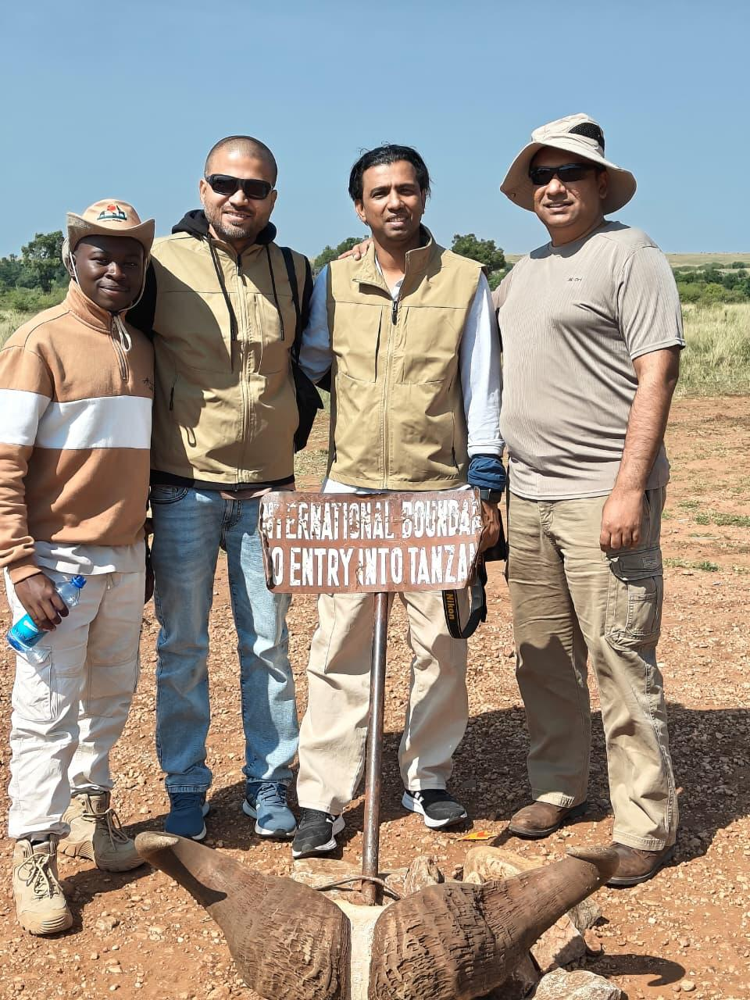
★★★★★
“[Professional, personal and absolutely beautiful.” “What stood out most was the attention to detail. Every part of our trip felt thoughtfully planned, and we got to experience Kenya in a way we never could have on our own.”]”
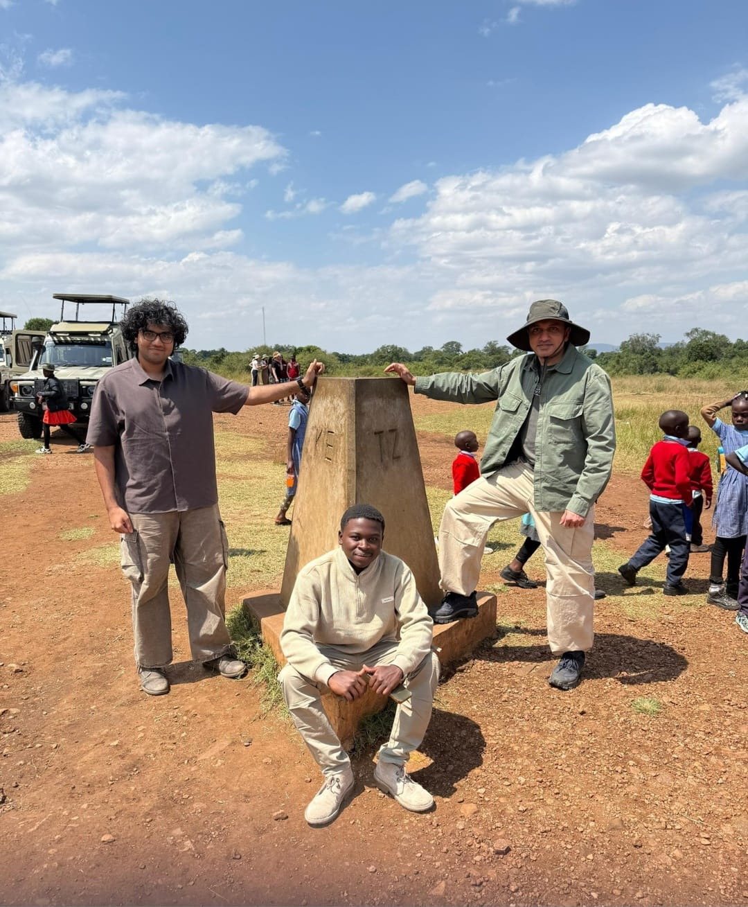
★★★★★
“[An unforgettable experience from start to finish.]” “Everything was perfectly organised, from the transport to the game drives. We saw incredible wildlife and the whole experience felt effortless. I’d definitely book with them again.”
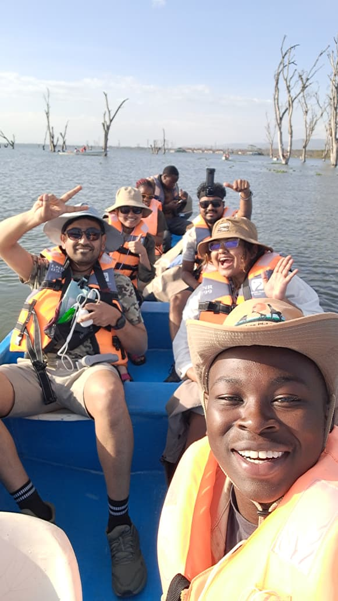
.★★★★★
“[The guides were knowledgeable, friendly, and knew exactly where to take us. Seeing the animals up close was something I’ll never forget. Highly recommended!” ]”
The Onyx difference
WHY ONYX NOMAD?
Local Knowledge
Experience Kenya with people who know the destination.
Tailor-Made
Your journey is designed around your interests.
Personal Service
Support from your first enquiry to the end of your safari.
Unforgettable
Journeys that become stories you'll remember for years.
Start your journey
LET'S BUILD YOUR SAFARI.
Tell us what you're dreaming of and we'll help shape the perfect Kenyan adventure.